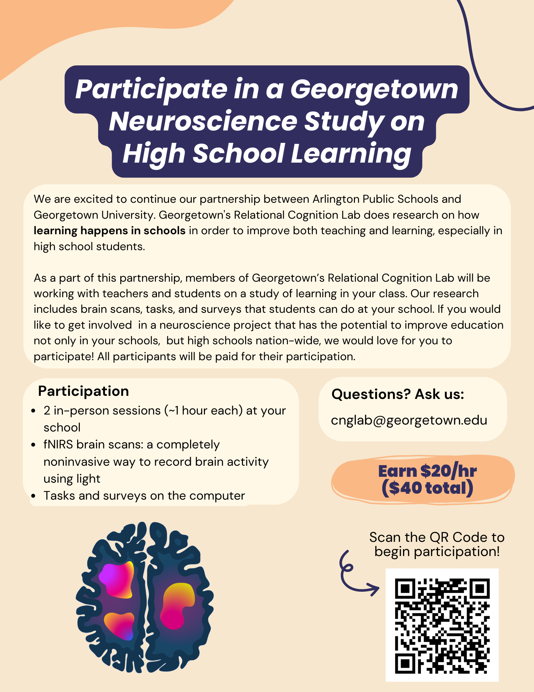

Overview
We will tack on Tuesday, November 26th to this week
, so it will
include plans for 4 class meetings. We will use this time to complete
Chapter 11:
Member functions, at which we finally arrive at writing our own
objects in C++.
Notice
I received an email from the Georgetown University neuroscience research study some of you heard about several weeks back letting me know no one from my classes had responded to the request for participants. So here is the recruitment flyer again. You can still sign on, and I'll free up classtime for participation if you are willing.

Monday, November 18th
Classwork
The Blue Zee King is always playing the tunes I want to hear, and this time was no exception. I asked him to write a program to assign exercises to random students, and he delivered. He did such a fine job that I just stole his code (with attribution, of course!) so we could use it in class.
I highly recommend taking at look at this code, looking for his improvements to the pairs chooser from which I asked him to derive it.
We will use this today to select students to present solutions to our homework exercises.
Homework
Read Chapter 11: Member functions, trying the examples yourself and commiting them to your git repos.